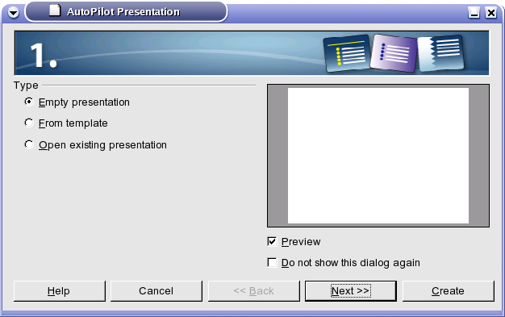
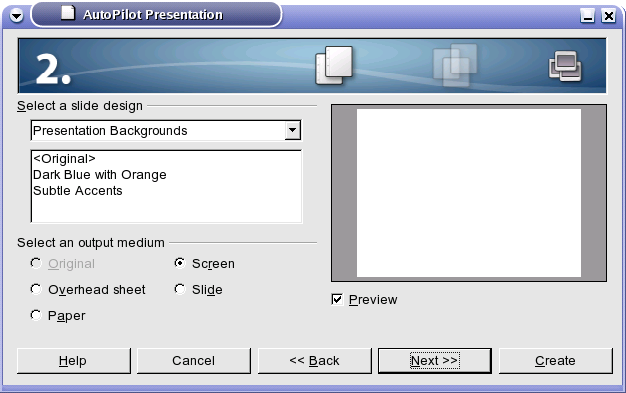
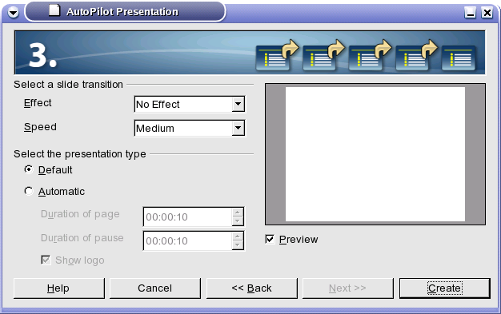
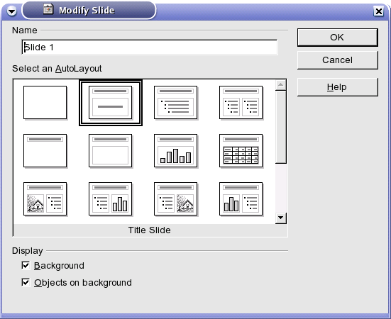
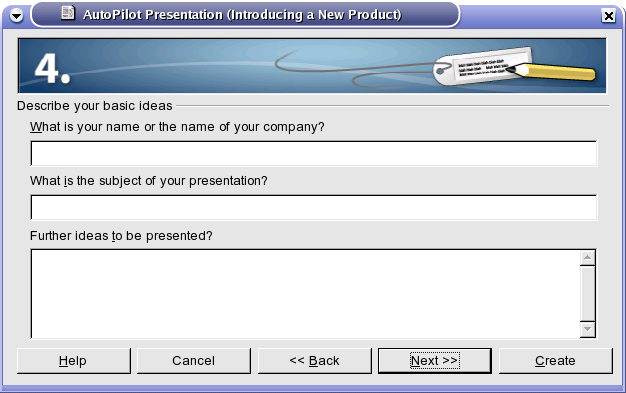
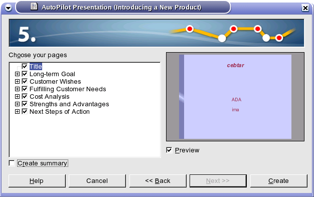

Kada pokrenete OpenOffice.org Impress pojavljuje se uvodni prozor (Auto Pilot Presentation), u kojem su vam ponuđene opcije za kreiranje nove ili
otvaranje postojeće prezentacije.

- Empty presentation
- prazna prezentacija.
- From Template
- otvori šablon za prezentaciju.
- Open existing presentation
- otvori postojeću prezentaciju.
- Preview
- prikazi u desnom gornjem uglu šematski prikaz prezentacije.
- Do not show this dialog again
- nemoj više prikazivati ovaj prozor, ukoliko otkačite ovu opciju prilikom sledećeg startovanja OpenOffice.org Impress-a, nećete dobiti ovaj uvodni prozor.
Ako odaberete kreiranje iz šablona tada od ponuđenih šablona birate onaj koji vam odgovara. Ako ste se odlučili za praznu prezentaciju tada se morate odlučiti za inicijalni dizajn slajdova i medijum za prikazivanje prezentacije.

- Select a slide design
- birate kako će izgledati vaša prezentacija.
- Original
- sami kreirate pozadinu i izgled prezentacije.
- Dark blue orange
-
predefinisan izgled prezentacije (Prvi šablon koji vam OpenOffice.org Impress nudi).
- Subtle Accents
-
predefinisan izgled prezentacije (Drugi šablon).
- Select an output medium
-
birate na koji način će se prikazivati prezentacija zbog veličine i raznih drugih podešavanja (papir, ekran, projektor...).
- Original
- veličina uzeta iz šablona.
- Screen
- ekran.
- Overhead sheet
- pravljenje prezentacije na folijama.
- Paper
- štampana prezentacija.
- Screen
- prikaz prezentacije na ekranu (najčešće).
- Slide
- prikaz pomoću foto slajdova.

U trećem prozoru birate efekte pri promeni slajda i vreme prikazivanja pojedinačnog slajda, ukoliko želite.
Ako ste na početku odabrali Empty presentation ovde se završava podešavanje opcija vaše prezentacije. Kliknete na dugme Create.
Sada je potrebno da odaberete sadržaj vaše prezentacije.

Od ponuđenih šablona odaberete jedan i potvrdite izbor klikom na dugme OK.
Ukoliko ste se, pak, odlučili za kreiranje prezentacije iz šablona očekuje vas četvrti korak.

U polje:
- What is your name or the name of your company
-
Unesite vaše ime, prezime i ime vaše firme.
- What is the subject of your presentation?
- U ovo polje unesite temu prezentacije.
- Further ideas to be presented?
- Ovde upišite šta želite da objasnite u toku vaše prezentacije (Kratak siže prezentacije).
Peti korak.

Pošto ste krenuli od šablona ovde birate da li želite da izbacite neki slajd iz vaše prezentacije pošto vam ta tema nije potrebna.
Kada ste odabrali slajdove koje želite možete kreirati prezentaciju klikom na dugme Create.